Robotics & Autonomous Systems
Robotic manipulators, mobile robots, autonomous navigation, and intelligent machine coordination.
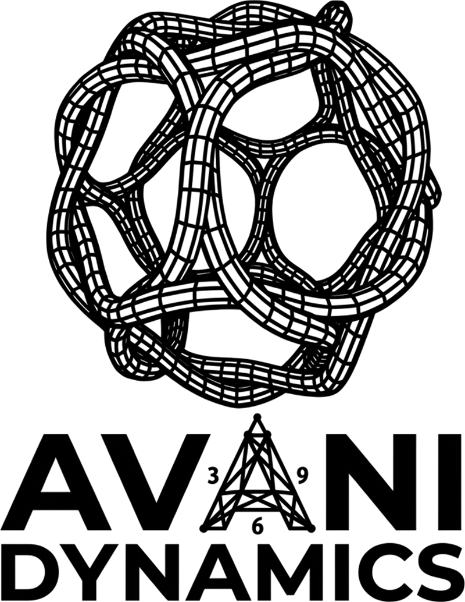
From Concept to Intelligent Machines.
Avani Dynamics develops robotic systems, intelligent machines, custom actuators, embedded electronics, and automation solutions. The work moves from mechanical design and control architecture to functional, tested hardware.
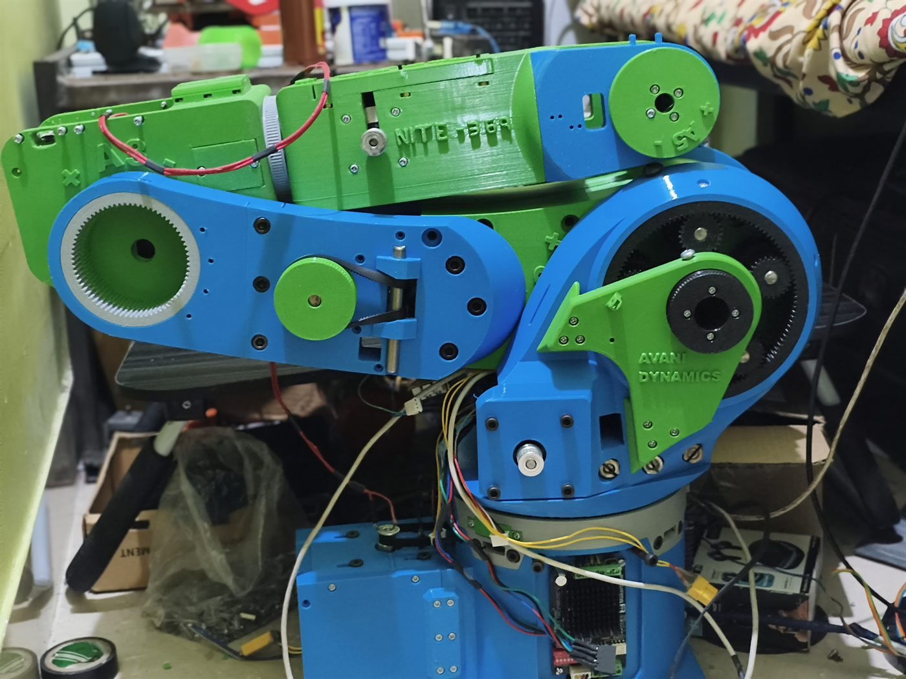
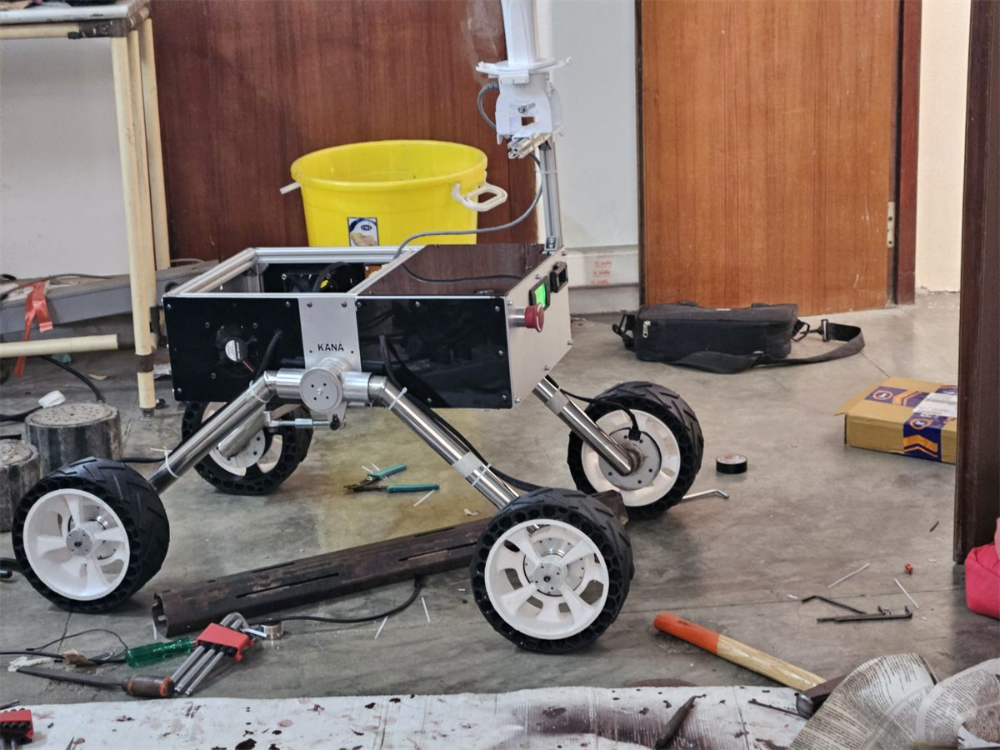
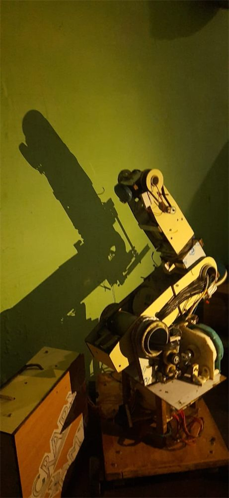
Four connected areas of work, from the first mechanical concept through to embedded control and experimental validation.
Robotic manipulators, mobile robots, autonomous navigation, and intelligent machine coordination.
Custom actuators, gearboxes, transmission mechanisms, and purpose-built mechanical architectures.
Custom electronics, microcontroller-based systems, motor control, and distributed computing.
Rapid prototyping, experimental hardware, engineering validation, and custom system development.
A robotic manipulator featuring fully 3D-printed structural components, custom compound planetary gearboxes, and distributed control using three RP2040 microcontrollers.
A reconfigurable robotics platform exploring autonomous coordination, modular docking, and collaborative robotic systems.
A robotic manipulator built from salvaged components using stepper motors and accessible electronics. Secured third place at Onfluence 2026.
Mobile robotics projects focused on embedded control, sensor integration, and autonomous navigation.
From initial concepts to functional prototypes, every project follows an iterative engineering process involving research, mechanical and electronic design, hardware development, and experimental testing.
Open-source development and technical documentation support knowledge sharing, collaboration, and accessible engineering.
Engineering a smarter way to farm.
Avani AgroTech focuses on developing affordable agricultural machinery and electric-powered equipment to simplify farming operations. By combining mechanical engineering, electric drive systems, and practical design, the venture aims to reduce manual labour, improve efficiency, and make modern farm machinery more accessible to small-scale farmers.
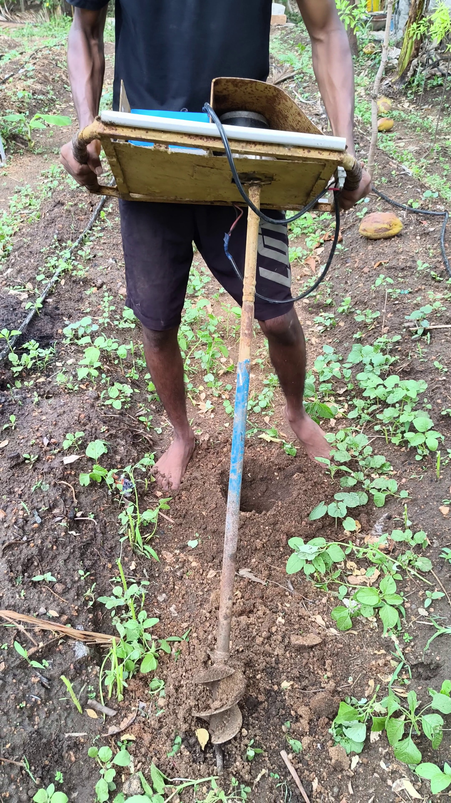
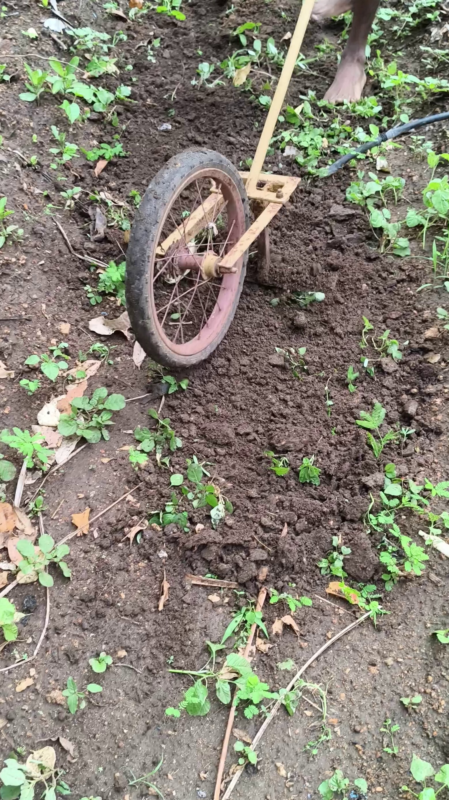
Prototype builds photographed in the workshop yard and during field trials — weeder, earth auger, planter, mini tiller, seed drill and sprayer cart.
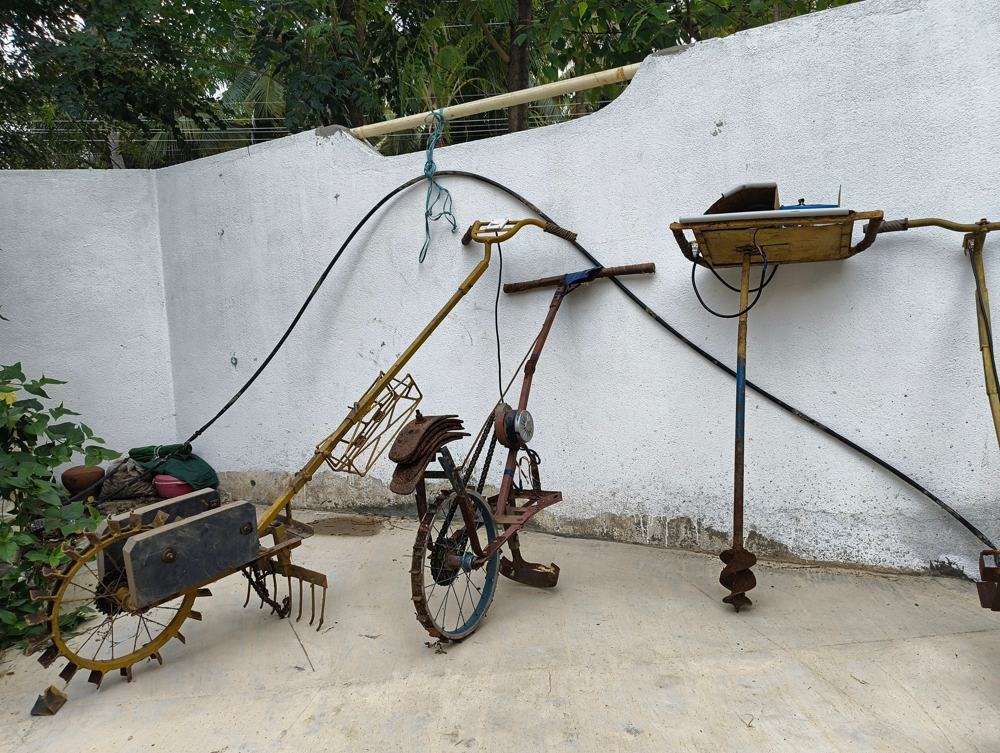
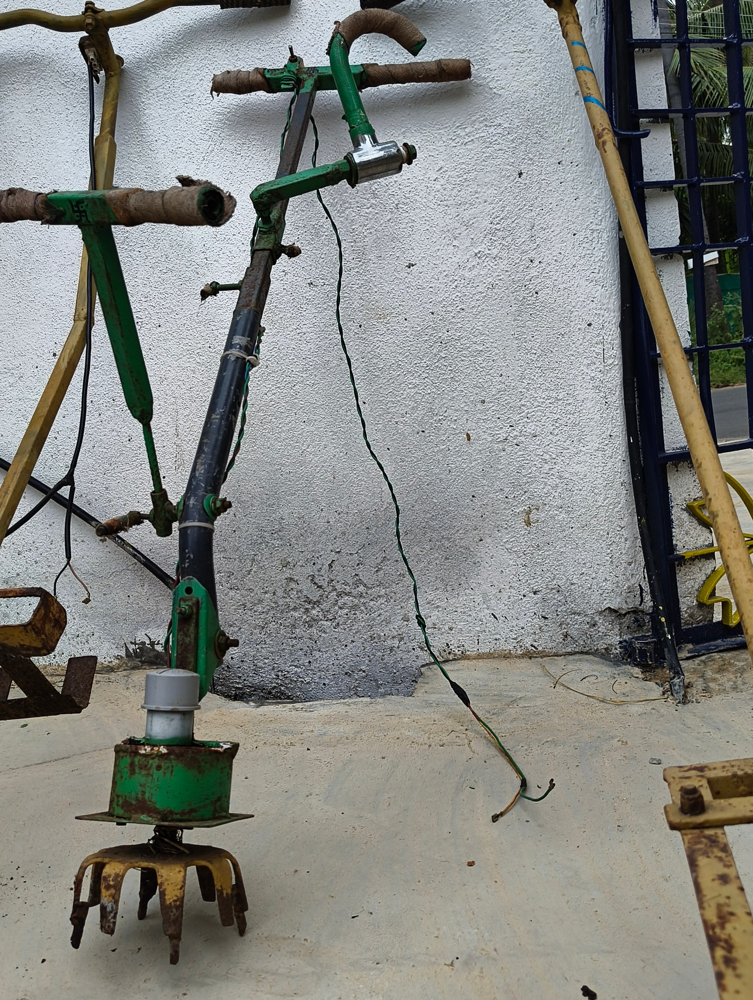
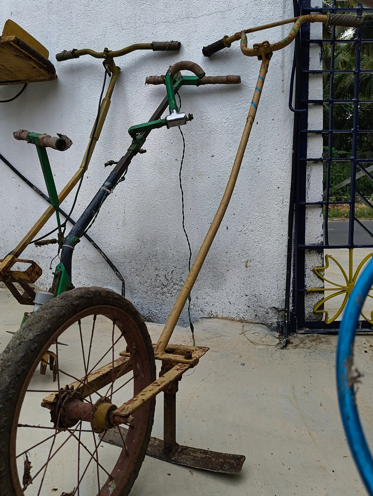
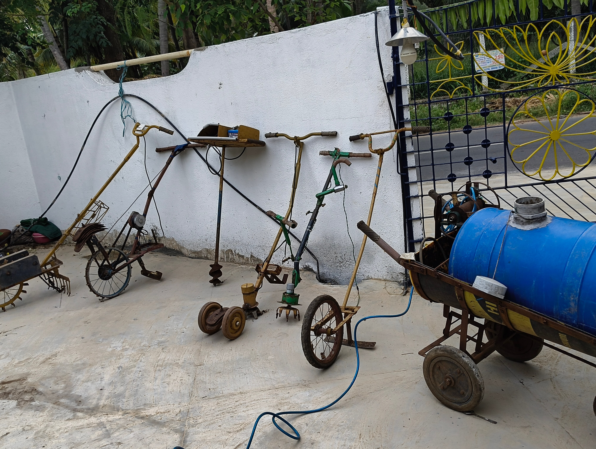
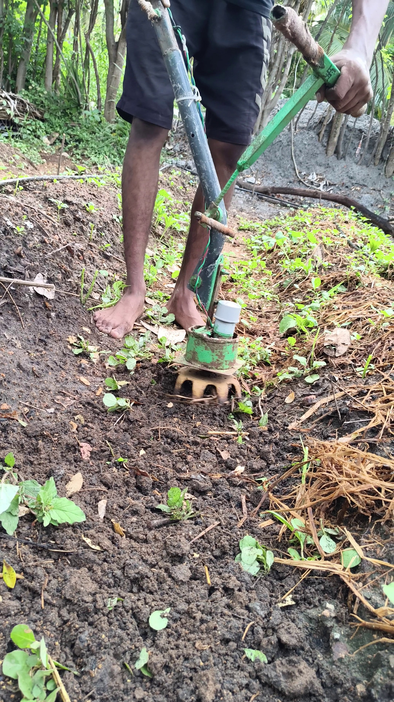
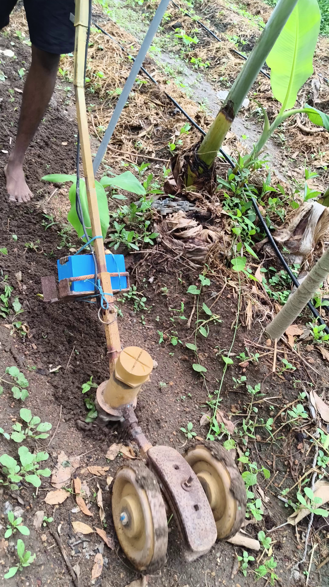
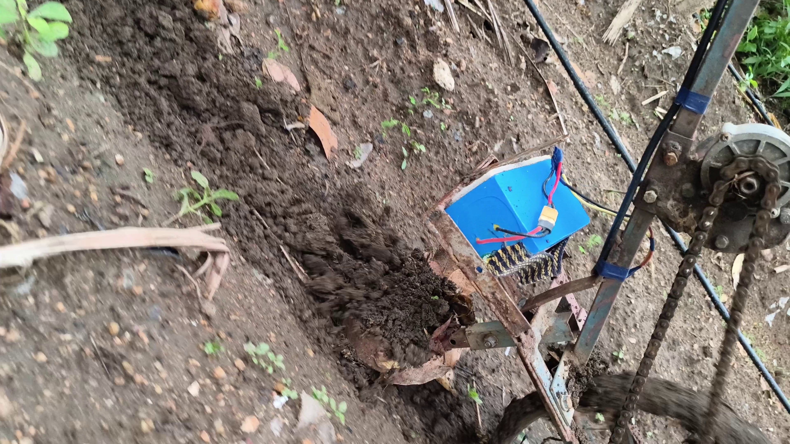
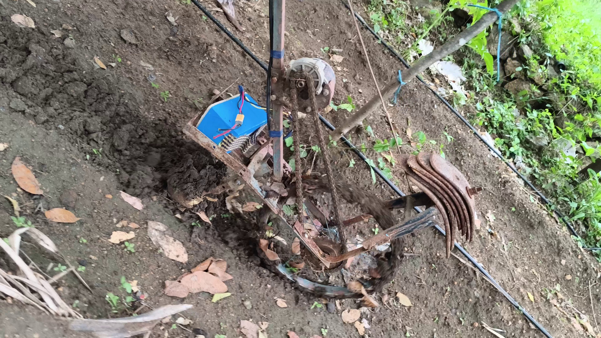
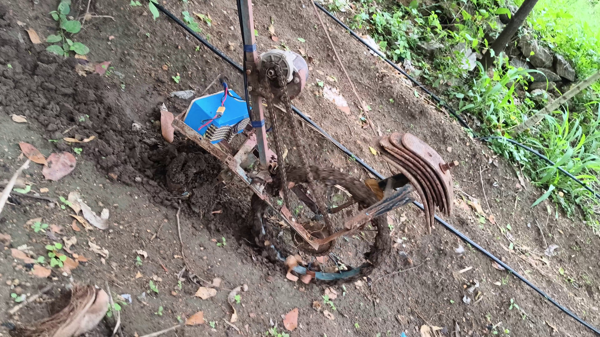
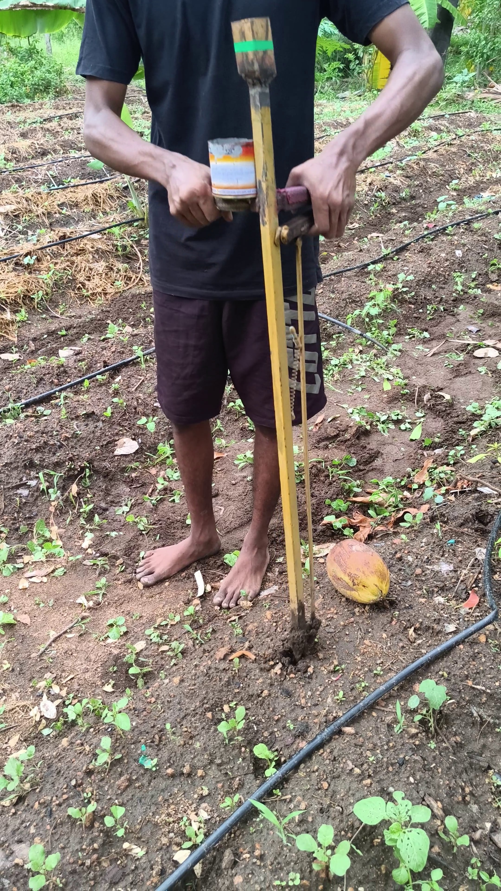
Affordable machinery, electric drive systems, and field-ready equipment designed around the constraints of small-scale farming.
Electric-powered equipment for soil preparation, cultivation, and other labour-intensive agricultural operations.
Innovative mechanical weeding solutions for crop-row cultivation, inter-row weed removal, and organic farming.
Compact, purpose-built machinery for tilling, drilling, and preparing soil for planting.
Affordable, energy-efficient equipment designed around the practical needs of small-scale farmers.
Prototype machinery developed around common field operations, from crop-row weeding and soil preparation to spraying.
A precision weeding system designed to remove weeds close to crops while minimizing soil disturbance and reducing manual effort.
A motorized soil-drilling system designed to simplify hole preparation for planting, fencing, and other agricultural applications.
An electrically powered weeding machine designed to reduce physical effort and improve efficiency during field operations.
A compact electric soil-cultivation machine designed for small-scale farming and garden applications.
A mobile agricultural platform integrating precision weeding mechanisms for efficient crop-row maintenance.
An electrically powered spraying system designed to simplify agricultural spraying and reduce manual pumping effort.
Agricultural machinery must be practical, affordable, and reliable under real field conditions. Development focuses on understanding farming challenges, designing purpose-built mechanical systems, and building prototypes that prioritize usability, maintainability, and cost-effectiveness.
Avani AgroTech aims to make agricultural mechanization more accessible through compact electric machinery and innovative farming equipment.
By focusing on the needs of small-scale farmers and organic farming practices, the venture seeks to reduce labour-intensive work, simplify everyday farming operations, and develop practical alternatives to conventional agricultural machinery.
Both ventures welcome collaboration with researchers, engineers, makers, academic institutions, farmers, and industry partners across robotics, automation, and agricultural engineering.
RESEARCH · HARDWARE DEVELOPMENT · OPEN SOURCE · FIELD TESTING · INDUSTRY PARTNERSHIPS